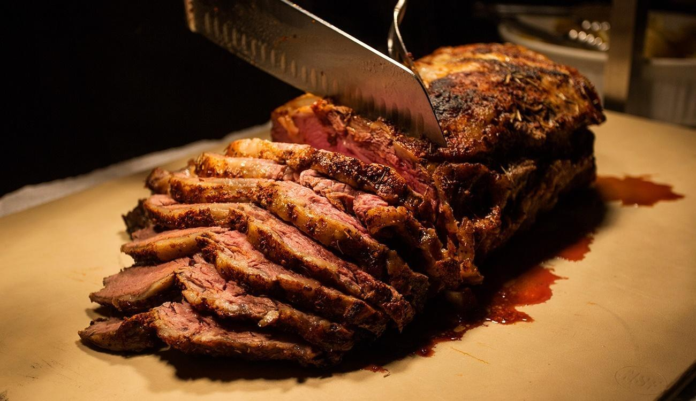
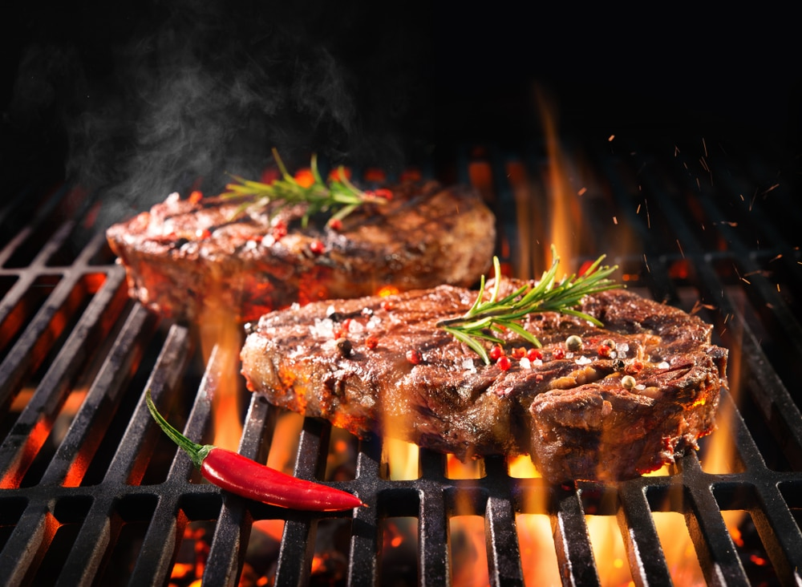

Suas carnes especiais estão aqui!

Variedade pra você
Variedade pra você
aproveitar!

São aquelas provenientes de animais que tradicionalmente não estamos habituados a consumir, assim como as carnes de animais silvestres ou de espécies de caça. Mas hoje em dia, estão cada vez mais sendo utilizadas, fruto da busca do brasileiro por proteínas mais saudáveis e pela diversificação de sabores e cardápios.
Seu sabor e a sua textura se assemelha a carne de porco. Possui baixíssimo teor de colesterol e é considerada uma carne magra quando comparada ao porco.
A carne é rica em ferro e vitamina B3, mas possui alto teor de colesterol, quando comparamos com carnes de aves como o frango e o Peru.
Em textura que lembra frango, com uma carne branca saborosa, nutritiva e pouco calórica. Somente as coxas são comestíveis.
Com baixo índice de gordura intramuscular. Retirada a gordura externa obtém-se uma carne ainda mais magra, bastante consumida na região norte do Brasil.
Recebem este nome porque são retiradas das melhores partes do boi, normalmente mais macias e ‘saborosas’ que as demais.
Sem dúvida é uma das mais preferidas pelo brasileiro. Seu consumo é tradicional,
especialmente nos churrascos no Sul do Brasil. Geralmente a costela é composta por osso, gordura e carne,
é
claro. Ela está localizada no meio do peito do boi e se estende até o que chamamos de contrafilé.
O preparo da costela é feito de diferentes formas. No Rio Grande do Sul, ela é assada no chamado
‘churrasco de
chão’, mas pode também ser cozida na panela com ensopados ou assada no forno. Para que ela seja realmente
uma
carne extremamente nobre, seu corte deve ser feito a partir das oito últimas vértebras do boi, na parte de
cima.
Neste local, os ossos são mais largos e maiores, por isso, apresetam uma carne mais gorda.

Reconhecido como o corte mais macio do boi. Esta parte tem cerca de dois quilos e está localizada na área traseira do animal, local em que os músculos menos trabalham, evitando o endurecimento e, por consequeência, deixando a carne mais macia e sem nervos. Sua utilização é feita em pratos clássicos da gastronomia, rendendo medalhões, escalopes, paillards e emincés. Seu corte tem que ser feito com o máximo de precisão, caso contrário, a maciez pode ser comprometida.

Uma das carnes nobres mais comuns em churrascos brasileiros e, talvez, a mais pedida nas churrascarias. Ela se localiza no início do coxão duro, mas não faz parte da alcatra. Geralmente, a picanha tem no máximo 1,1 quilo, tem que ter altura de no máximo sete centímetros e coloração vermelha clara. A picanha é extremamente saborosa, tendo um preparo simples, podendo ser assada em partes compactadas, inteira na grelha ou no espeto.

É considerado um dos melhores cortes do boi, sendo retirado de duas partes nobres do animal, que são o contrafilé e o miolo do filé, estando presente na parte central da lombar com quatro vértebras. O corte é realizado na transversal, deixando o osso da espinha dorsal em um formato de T, o que dá origem ao seu nome. As peças de T-Bone têm entre 1 kg e 1,5 kg. Este corte tem uma camada de gordura e uma textura bem macia. Esta carne nobre é mais indicada para os preparos rápidos em grelhas ou churrasqueira, dispensando o uso de temperos, que podem vir a alterar o seu sabor.